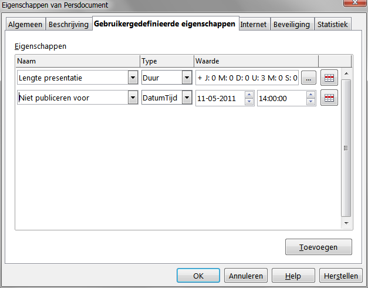

OpenOffice.org 3.3 Nieuwe mogelijkheden
Verbeteringen voor productiviteit
Nieuwe afhandeling gebruikergedefinieerde eigenschappen
 OpenOffice.org maakt het voor gebruikers mogelijk om een onbeperkt aantal gebruikergedefinieerde documenteigenschappen te definiëren als naam/waarde-paren in het dialoogvenster Bestand> Eigenschappen. Met versie 3.3 is het mogelijk om ook Datum/Tijd-waarden en waarden die een duur bevatten te definiëren.
{kind=link}
Inbedding van standaard PDF-lettertypen
In vorige versies werden de standaard PDF standaardlettertypen (Times, Helvetica, Courier, Symbol en ZapfDingbats) alleen ingebed in de resulterende PDF als het uiteindelijke bestand van het type PDF/A was, omdat de standaarden voor PDF/A dit vereisten. In versie 3.3 kunt u deze lettertypen, optioneel, inbedden in alle PDF-documenten die worden gemaakt door OpenOffice.org om de nauwkeurigheid van de weergave in PDF-lezers te verbeteren.
Nieuw lettertype Narrow
Oracle draagt een Narrow-lettertype bij aan de opensource familie van lettertypen Liberation. Omdat dit metrisch compatibel is met het lettertype Arial Narrow, dat veel gebruikt wordt op systemen met Microsoft Windows, completeert dit lettertype nu de lettertypenfamilie Liberation en levert een compatibele en gratis verzameling lettertypen op die beschikbaar zijn op alle platformen.
Verbeterde beveiliging documenten in Writer en Calc
OpenOffice.org Writer en Calc maken nu twee niveaus van beveiliging van documenten mogelijk. Net zoals eerst kunt u een document opslaan met een wachtwoord dat voorkomt dat niet-geautoriseerde gebruikers de inhoud lezen. Nu kunt u ook een wachtwoord instellen om een document te beveiligen tegen ongewenste wijzigingen.
{kind=link}
Op deze manier kunt u de inhoud van een document beschikbaar maken om te lezen door een geselecteerde groep mensen, en voorlezen en bewerken door een andere groep. Dit gedrag is nu compatibel met de bestandsbeveiliging in Microsoft Word en Excel.
Automatische getallen achter de komma voor de notatie 'Algemeen' in Calc
In OpenOffice.org Calc zullen de getallen die zijn opgemaakt met de getalnotatie 'Algemeen' worden weergegeven met zoveel getallen achter de komma als vereist is. In eerdere versies werd een maximum van 2 decimale getallen weergegeven in de getalnotatie 'Algemeen'.
1 miljoen rijen in een werkblad
Werkbladen van OpenOffice.org Calc ondersteunen nu 1.048.576 (1 miljoen) rijen in plaats van 65.536 rijen.
Nieuwe opties voor importeren van CSV (komma gescheiden waarde) in Calc
Twee nieuwe opties zijn beschikbaar bij het importeren van CSV-bestanden die gegevens bevatten die zijn gescheiden door specifieke tekens.
{kind=link}
Deze opties bepalen of gegevens met aanhalingstekens altijd als tekst zullen worden geïmporteerd, en of OpenOffice.org Calc automatisch alle getalsopmaak zal detecteren, inclusief speciale getalsopmaak zoals datums, tijd en wetenschappelijke notatie. De detectie is afhankelijk van de taalinstellingen.
Invoegen van tekenobjecten in diagrammen
De functionaliteit Diagram is verbeterd en ondersteunt nu tekenobjecten. De werkbalk tekening maakt het mogelijk eenvoudige vormen zoals lijnen, rechthoeken en tekstobjecten in te voegen en zelfs complexe vormen zoals kubussen, symbolen, blokpijlen, stroomdiagrammen en sterren. De tekenobjecten kunnen worden bewerkt door verschillende dialoogvensters die kunnen worden geopend via het contextmenu. Ook het lettertype en opmaak van tekstobjecten kan worden gewijzigd.
{kind=link}
Voor meer details van deze mogelijkheid, bekijk het GullFOSS blogartikel.
Hiërarchische aslabels voor diagrammen
Als de categorieën in diagrammen hun gegevens uit een werkblad krijgen en zich uitstrekken over meerdere rijen en kolommen, wordt de richting van de eerste gegevensreeks gedetecteerd. Als de gegevens voor de eerste reeks uit rijen komt, worden de catgorieën opgesplitst in meerdere rijen. Anders zullen de categorieën worden gesplitst in meerdere kolommen. De gesplitste categorieën worden dan toegepast als verschillende hiërarchische labels op de x-as.
{kind=link}
Voor diagrammen met eigen gegevens (gewoonlijk gebruikt in Impress or Writer), is er een nieuw pictogram om tekstkolommen toe te voegen, die dan zullen worden gebruikt voor de verschillende niveaus in de labels van de x-as.
{kind=link}
Voor meer details van deze mogelijkheid, bekijk het GullFOSS blogartikel.
Verbeterde afhandeling van dia-ontwerp in Impress
Afhandeling van dia-ontwerpen in presentaties is aanzienlijk verbeterd. Het type van inhoud van de gedeelten van de dia wordt nu direct gedefinieerd op de dia door te klikken op één van de vier pictogrammen voor typen inhoud: tabel, diagram, afbeelding, of film, of direct tekst invoeren.
{kind=link}
Dit vermindert het aantal variëteiten voor dia-ontwerpen, hetgeen de selectie voor de opmaak veel helderder maakt. In aanvulling hierop kunt u nu ook lay-outs toewijzen aan dia's en nieuwe dia's maken met een specifieke opmaak met behulp van de werkbalk. Eén nieuw element op de werkbalk wordt gebruikt om een nieuwe dia toe te voegen (of de huidige geselecteerde dia te dupliceren).
{kind=link}
Een soortgelijk element op de werkbalk wordt gebruikt om een lay-out toe te wijzen aan de huidige geselecteerde dia, of de lay-out te herstellen naar de toegewezen lay-out na het maken van wijzigingen.
Handmatige instelling voor ondersteuning van Primaire sleutel voor databases
Bij het verbinden met een database via een ODBC-, JDBC-, of ADO-besturingsprogramma, wordt Base gebruikt om een heuristische methode toe te passen om te bepalen of de database primaire sleutels ondersteunt. In sommige gevallen faalde deze heuristische methode. Daarom introduceert versie 3.3 een expliciete optie om ondersteuning voor primaire sleutels te declareren. Als deze instelling is ingeschakeld zal Base er altijd van uitgaan dat de database primaire sleutels ondersteunt, ongeacht het resultaat van de heuristische analyse.
Ondersteuning van registratie voor alleen-lezen database
In OpenOffice.org worden registraties van databases opgeslagen in de configuratiebestanden van de toepassing. Daarom is het mogelijk om aanvullende fragmenten voor de configuratie uit te voeren die aanvullende registraties bevatten. Indien deze fragmenten voor de configuratie worden gedeclareerd als alleen-lezen (met behulp van de gebruikelijke mechanismen voor de configuratie hiervan), blokkeert OpenOffice.org nu aanpassingen (bewerkingen, verwijdering) van het overeenkomend registratie-item.
Nieuwe opdracht in Math 'nospace'
Het is nu mogelijk om expliciet de smalle horizontale ruimte die altijd wordt toegepast tussen twee elementen te verwijderen. De syntaxis is nospace { el1 el2 ... }
Gebruik en interface
Algemene werkbalk Zoeken
Gegevens over het gebruik gaven aan dat een groot gedeelte van de gebruikers van OpenOffice.org snel wilden zoeken binnen de tekst van een document. Dit is nu mogelijk met behulp van de nieuwe werkbalk 'Zoeken' die een zoekveld bevat en de knoppen Vorige en Volgende.
{kind=link}
Nieuwe, eenvoudiger te gebruiken, interface voor afdrukken
 Het dialoogvenster Afdrukken is compleet vernieuwd in OpenOffice.org 3.3 om een meer efficiënte en meer bruikbare ervaring voor het afdrukken mogelijk te maken.
Het dialoogvenster Afdrukken is compleet vernieuwd in OpenOffice.org 3.3 om een meer efficiënte en meer bruikbare ervaring voor het afdrukken mogelijk te maken.
Een geïntegreerd voorbeeld is beschikbaar om het uiterlijk weer te geven van het af te drukken document, en alle relevante instellingen kunnen worden gemaakt vanuit dit dialoogvenster, inclusief aantal pagina's, instellingen voor sorteren, documentobjecten afdrukken of verbergen, volgorde van pagina's, meerdere pagina's afdrukken, en nog veel meer.
Voor meer details van deze mogelijkheid, bekijk het GullFOSS blogartikel.
Meer opties voor wijzigen hoofd-/kleine letters
Met versie 3.3 heeft u meer opties voor het wijzigen van hoofd-/kleine letters van een geselecteerd gedeelte tekst. Apart van het wisselen tussen hoofd- en kleine letters, kunt u dat nu instellen op: Zin begint met een hoofdletter (eerste letter hoofdletter), Elk woord met hoofdletter, of Hoofd-/kleine letters wisselen.
Nieuw ontwerp voor Thesaurus
 Het dialoogvenster Synoniemen is opnieuw vormgegeven voor beter gebruik. In aanvulling daarop maakt een nieuw submenu 'Synoniemen' in het standaard contextmenu het u nu mogelijk om onmiddellijk een synoniem te selecteren voor het huidige geselecteerde woord.
Het dialoogvenster Synoniemen is opnieuw vormgegeven voor beter gebruik. In aanvulling daarop maakt een nieuw submenu 'Synoniemen' in het standaard contextmenu het u nu mogelijk om onmiddellijk een synoniem te selecteren voor het huidige geselecteerde woord.
Herstellen van tekst naar standaard taal in Writer
U kunt nu de taal van de tekst herstellen naar de standaardtaal met behulp van de statusbalk Taal of het menu Extra > Taal.
{kind=link}
Renderen van tekst van besturingselementen voor formulieren in Writer
Besturingselementen in tekstdocumenten renderen nu hun tekst op dezelfde manier als het document dat doet, en maakt dus het uiterlijk van de besturingselementen als een deel van het tekstverloop meer naadloos en consistent.
Gewijzigde standaarden voor diagrammen
Verschillende standaarden zijn gewijzigd voor diagrammen van OpenOffice.org: grootte is groter, lettertype groter, geen zwarte randen, beter 3D-uiterlijk en meer.
Gekleurde werkbladtabs in Calc
In elk werkblad in een document van OpenOffice.org Calc kan nu een kleur worden toegewezen document aan de tabs in het gebied werkbladtabs aan de linker onderzijde van het venster.
{kind=link}
Aanpassing naar gemarkeerde selectie voor filtergebied in Calc
In OpenOffice.org Calc verkleint een selectie nu naar de actueel gebruikte kolommen met gegevens bij het inschakelen van een filter (AutoFilter, Standaardfilter, Uitgebreid filter).
{kind=link}
Gebruikers kunnen een gehele rij selecteren door te klikken op een rijkop en verwachten dat een filter werkt op de gegevens onder de geselecteerde rij. Indien één enkele rij is geselecteerd wordt de selectie verkleind tot de actueel gebruikte kolommen met gegevens en dan uitgebreid met alle aaneengesloten rijen met gegevens eronder. Selecteren van slechts een gedeelte van een rij gedraagt zich soortgelijk door de geselecteerde kolommen uit te breiden met de rijen met gegevens. Een geselecteerd gebied, bijvoorbeeld meer dan een gehele rij, wordt verkleind tot de actueel gebruikte kolommen met gegevens.
Dialoogvenster Sorteren voor Draaitabel in Calc
De Draaitabel ondersteunt nu een handige manier van sorteren en filteren van de items met behulp van een speciaal pop-upvenster.
{kind=link}
Voor meer details van deze mogelijkheid, bekijk het GullFOSS blogartikel.
Weergeven van aangepaste namen voor velden van Draaitabel, items en totalen in Calc
Aan velden van Draaitabel, items en totalen kunnen nu eigen namen voor weergave worden toegewezen door ze in de overeenkomende cel in de tabel van de Draaitabel te typen.
Internationalisatie
Aanvullende gegevens locale
Arabisch (Algerije) [ar-DZ], Bafia (Kameroen) [ksf-CM], Bushi (Mayotte) [buc-YT], Campidanees (Sardinië) [sro-IT], Gallurees (Sardinië) [sdn-IT], Gikuyu (Kenia) [ki-KE], Latgaliaans (Letland) [ltg-LV], Logudorees (Sardinië) [src-IT], Maithili (India) [mai-IN], Plateaumalagasi (Madagaskar) [plt-MG], Maore (Mayotte) [swb-YT], Papiamento (Nederlandse Antillen) [pap-AN], Rusyn (Slowakije) [rue-SK], Rusyn (Oekraïne) [rue-UA], Sassarees (Sardinië)[sdc-IT], Sorbisch, Tahitiaans (Frans Polynesië) [ty-PF], Oppersorbisch (Duitsland) [hsb-DE], Yoruba (Nigeria) [yo-NG]
Mogelijkheden en uitbreidingen voor ontwikkelaars
Verbeteringen voor tabelobject
Het tabelobject accepteert nu aanvullende gegevens zoals getallen of afbeeldingen. De methode XGridDatamodel
addRow(string headerName, sequence<string> data)
is gewijzigd naar
addRow(string headerName, sequence<any> data)
U kunt nu het uiterlijk van een tabelobject beheren met behulp van aanvullende parameters voor horizontale en verticale uitlijning, achtergrondkleuren voor rij, lijnkleuren, en tekstkleuren. Voor meer informatie en voorbeelden, bekijk de OpenOffice.org wikipagina's.
Nieuwe node MetaData voor Database
U kunt nu een nieuwe eigenschap definiëren in een xcu-bestand van het besturingsprogramma voor een database. Dit is standaard ingeschakeld voor besturingsprogramma's voor MySQL (JDBC) en ADO (inclusief Microsoft Access). De eigenschap wordt gedefinieerd in het gedeelte MetaData.
<node oor:name="SupportsColumnDescription" oor:op="replace">
<prop oor:name="Value" oor:type="xs:boolean">
<value>true</value>
</prop>
</node>
Wanneer deze eigenschap is ingeschakeld zal het tabelontwerp de omschrijving van de kolom weergeven naast de normale omschrijving die wordt gebruikt als Helptekst.
Uitbreiding besturingsprogramma's voor databases met behulp van extensies
Sommige besturingsprogramma's voor databases ondersteunen geen speciale mogelijkheden zoals definities voor afwisselende weergave of toevoegen/verwijderen van sleutels van tabellen. Vanaf OpenOffice.org 3.3 kunnen de overeenkomende interfaces worden geïmplementeerd door een extensie:
com.sun.star.sdb.tools.XViewAccess com.sun.star.sdb.tools.XTableRename com.sun.star.sdb.tools.XTableAlteration com.sun.star.sdb.tools.XKeyAlteration com.sun.star.sdb.tools.XIndexAlteration
Voor meer details over de implementatie van deze mogelijkheid, bekijk het overeenkomende gedeelte in de OpenOffice.org Developer's Guide.